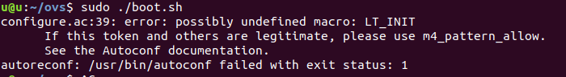
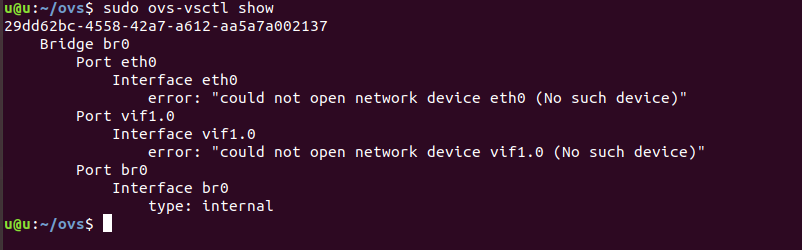

Cài đặt OVS từ source¶
Tham khảo tại https://docs.openvswitch.org/en/latest/intro/install/general/ Cài trên máy ảo Ubuntu Server 20.04.1
1. Lấy về source¶
git clone https://github.com/openvswitch/ovs.git
hoặc download từ http://openvswitch.org/download/ hoặc download file ZIP từ https://github.com/openvswitch/ovs
2. Build Requirements - Installation Requirements¶
Install “make” Package on Ubuntu
sudo apt-get update -y
sudo apt-get install -y make
Có thể phải cài đặt một số phần mềm yêu cầu khác
3. Bootstrapping¶
Di chuyển vào thư mục ovs vừa lấy về và chạy lệnh để build “configure” script
cd ovs
./boot.sh
Nếu lỗi ./boot.sh: 2: autoreconf: not found

Cài autoreconf bằng lệnh
sudo apt-get install autoconf
4. Configuring¶
Chạy configure script:
./configure
Nếu lỗi error: possibly undefined macro: LT_INIT

thì cài libtool bằng lệnh
sudo apt-get update -y
sudo apt-get install -y libtool
Nếu lỗi

dùng lệnh
./configure --disable-dependency-tracking
5. Building¶
Chạy GNU make
make
make install
Nếu lỗi make: command not found thì cài đặt make như phần 2
6. Starting¶
Khởi động các daemon, khởi động cơ sở dữ liệu cấu hình ovsdb-server
mkdir -p /usr/local/etc/openvswitch
ovsdb-tool create /usr/local/etc/openvswitch/conf.db \
vswitchd/vswitch.ovsschema
mkdir -p /usr/local/var/run/openvswitch
ovsdb-server --remote=punix:/usr/local/var/run/openvswitch/db.sock \
--remote=db:Open_vSwitch,Open_vSwitch,manager_options \
--private-key=db:Open_vSwitch,SSL,private_key \
--certificate=db:Open_vSwitch,SSL,certificate \
--bootstrap-ca-cert=db:Open_vSwitch,SSL,ca_cert \
--pidfile --detach --log-file
Khởi động main Open vSwitch daemon :
ovs-vsctl --no-wait init
ovs-vswitchd --pidfile --detach --log-file
7. Test¶

Thêm bridge và port
ovs-vsctl add-br br0
ovs-vsctl add-port br0 eth0
ovs-vsctl add-port br0 vif1.0
Hiện các brigde
ovs-vsctl show

(error trên là do trên máy chưa có các port đó)